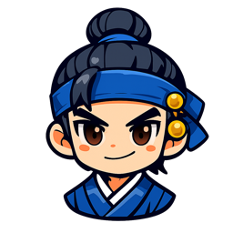
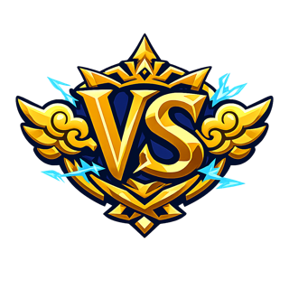

BRAIN ARENA
脑力竞技
以 答 为 刃
三名守门者,共守一条塔脉。
答对即出刀——你死,或塔倾。
🖌 童生试
蒙学起步
📜 乡试
学有所成
🏮 殿试
问鼎文魁
▶ 继续上一局
⚔ 挑 战 开 始
♾ 无尽模式
🤖 1v1 竞速
👥 3v3 团战
❓ 怎么玩
⚙
v5.57
可调常量(改了下一局生效)
❓ 怎 么 玩
✏️
答题就是出刀
答对砍守门者一刀,答得越快伤害越高;答错要挨它一下。
🔥
连击是命脉
连续答对,刀越来越重;答错连击清零。
⚡
能量放技能
答题攒能量,按
1
/
2
(或点下方按钮)放轻技·重技。
🃏
发牌选强化
战斗中会停表发牌——选一张把自己越养越强,击破三关就赢。
明 白 了
第 1 节
磐石 · Σ
第 1 题
🔊

你
100 / 100

守门者
1060
练习赛 · 对面塔脉 0%
肃静
回避
◆
VS
Σ
!
0
🔥 连 击
10
⚔ 攻 击
0
⚡ 能 量
0
☢ 超 载
单体
溅射
减速
双响
下一题翻倍!
速算
★
⚡+0
3 × 4 + 2
1
⚡
一闪
50⚡
攻击 × 3
2
🥁
擂鼓
100⚡
攻击 × 6 + 震慑
1
2
3
4
5
6
7
8
9
0
⌫
第 一 关
Σ
守门者 · 磐石Σ
轻触跳过 ›
⛽ 补给 1/5
🎲 重抽
我的构筑
⏸ 时间已停
✕
第 1 关
Σ
击 破
⛽ 过关补给
🎲 重抽
下 一 关
放 榜
S
得 分
0
🏅 新纪录!
⚔ 再 来 一 局
📜 战报卡
⚔ 复制挑战链接
回标题
开发数据 §13
长按图片保存/转发 · 点空白处关闭